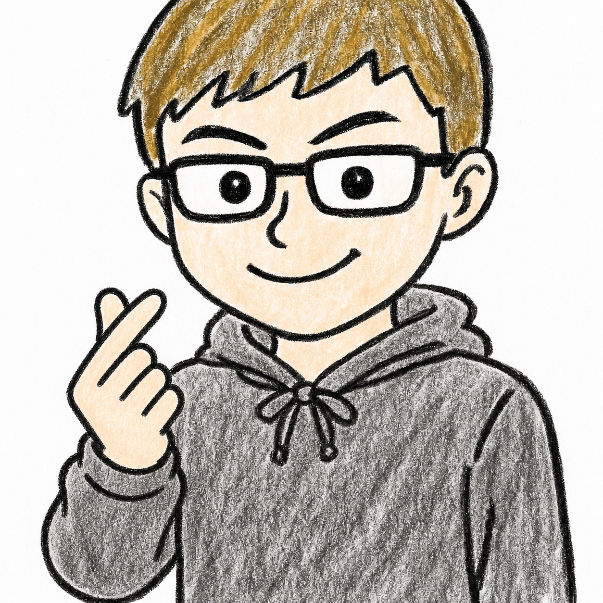

ことばと文化の学びの場
― 仲潔研究室 ―
Exploring Language and Culture

仲 潔（なか・きよし）
岐阜大学教育学部教授。
ことば、文化、社会、教育の関わりに関心を持ち、英語教育、日本語教育、教師教育、社会言語学などの研究と実践に取り組んでいる。
小・中・高等学校の英語教育（日本語教育・国語教育との連携を含む）を対象に、第二言語習得論、社会言語学、認知言語学などの知見を踏まえながら、「なぜ英語をそのように教えるのか」という根本的な問いから言語教育を考えています。
理論を覚えること自体を目的とするのではない、実際の授業や社会におけることばの在り方と往還しながら、その前提や限界を検討することを重視しています。
多様な背景をもつ学習者に向き合い、自ら考え続ける力を備えた「ことばの教育のプロ」の育成を目指しています。また、ことばへの認識を問い直すことを通して、社会の在り方を批判的に考え、よりよい未来を創造する人材の育成にも取り組んでいます。
主な著書

小中学生や初学者が「事実」と「筆者の意見」を見抜くコツを直感的に身につけるAI学習アプリ。スタンプラリー機能付き。
[だれ][する][なに][どこ][いつ]の正しい意味順で文の要素を撃ち落とすシューティング。【中2レベル英文法対応】
[だれ][する][なに][どこ][いつ]の正しい意味順で文の要素を撃ち落とす爽快シューティングゲーム。直感的な語順感覚を鍛えます。
英文の客観的事実（Data）と主張（Claim）の主従を見極める要約力を徹底して鍛えます。無料API解説と論理分析機能付き。
AIを活用して英語スピーキングや面接練習を繰り返し行うことができる実践ツールです。

入力した単語から、「I / my」を主語とする生きた例文を生成。言葉を自分事として脳内に貯金・蓄積していく履歴管理ツールです。
中学校英語、高校入試、共通テスト、英検、TOEIC、TOEFL、IELTS、TEAPに対応しています。
高校英文法総復習×教員採用試験2次対策。文法エラー指導力と即興意見表明力を同時に鍛えるツールです。
授業案、言語活動、評価規準、プリント生成用プロンプトを作成できます。
AIの喋りすぎを抑え、テンポのよいラリーを実現。終了後はWordに貼るだけで綺麗にまとまる復習ノートを日本語で生成します。